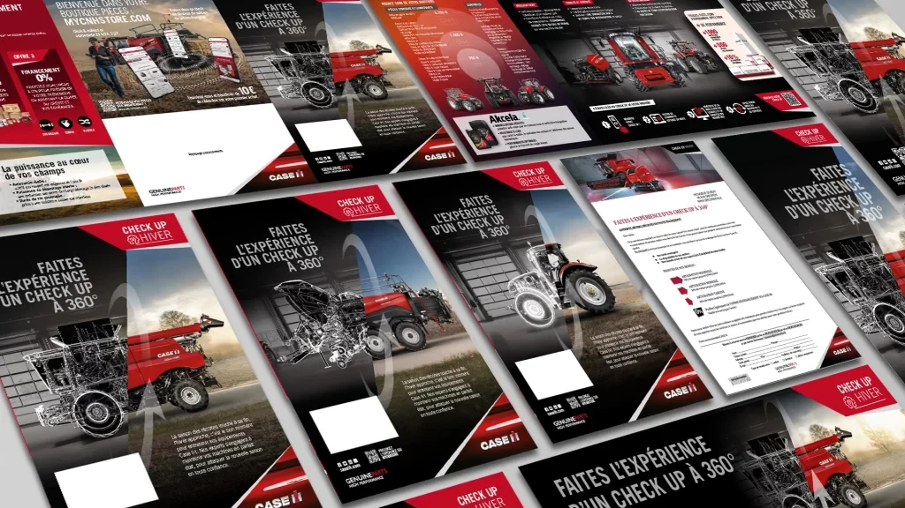

Campagne Après-vente · Pièces d'origine · Case IH
Une campagne Pièces & Après-vente Case IH pour inciter les exploitants à réviser leur matériel avant l'hiver : contrôle complet, pièces d'origine Genuine Parts et offre de financement pour anticiper sereinement la prochaine saison.
